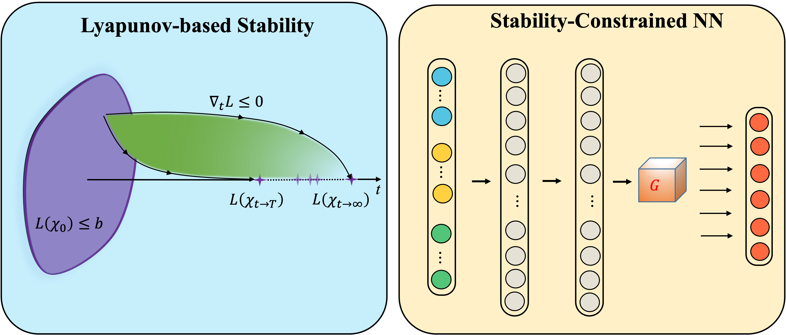
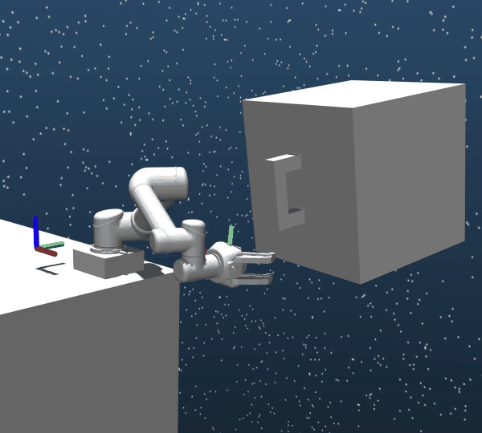
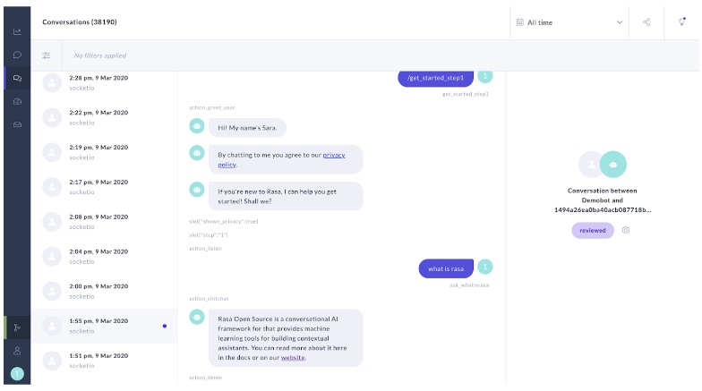
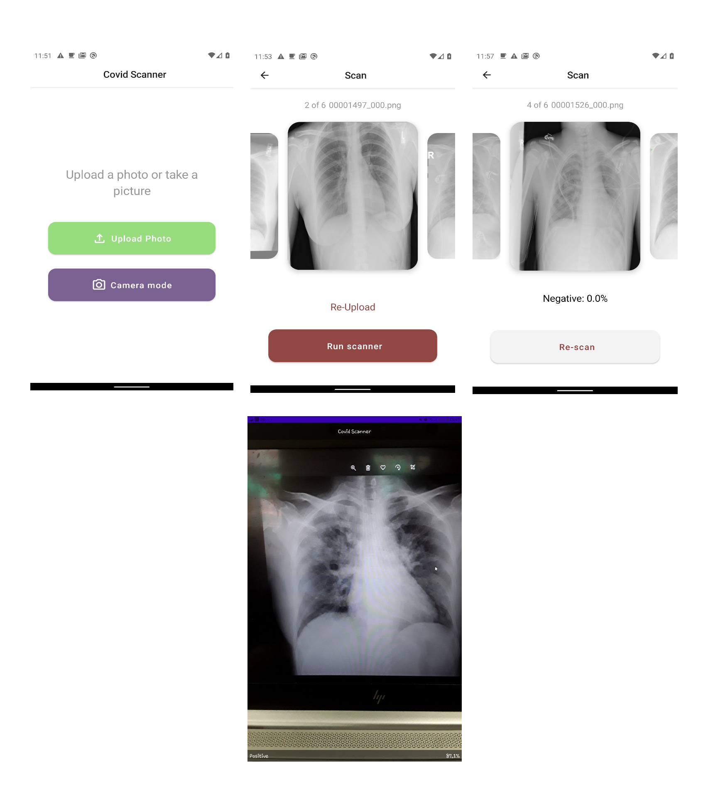
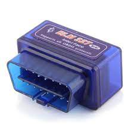
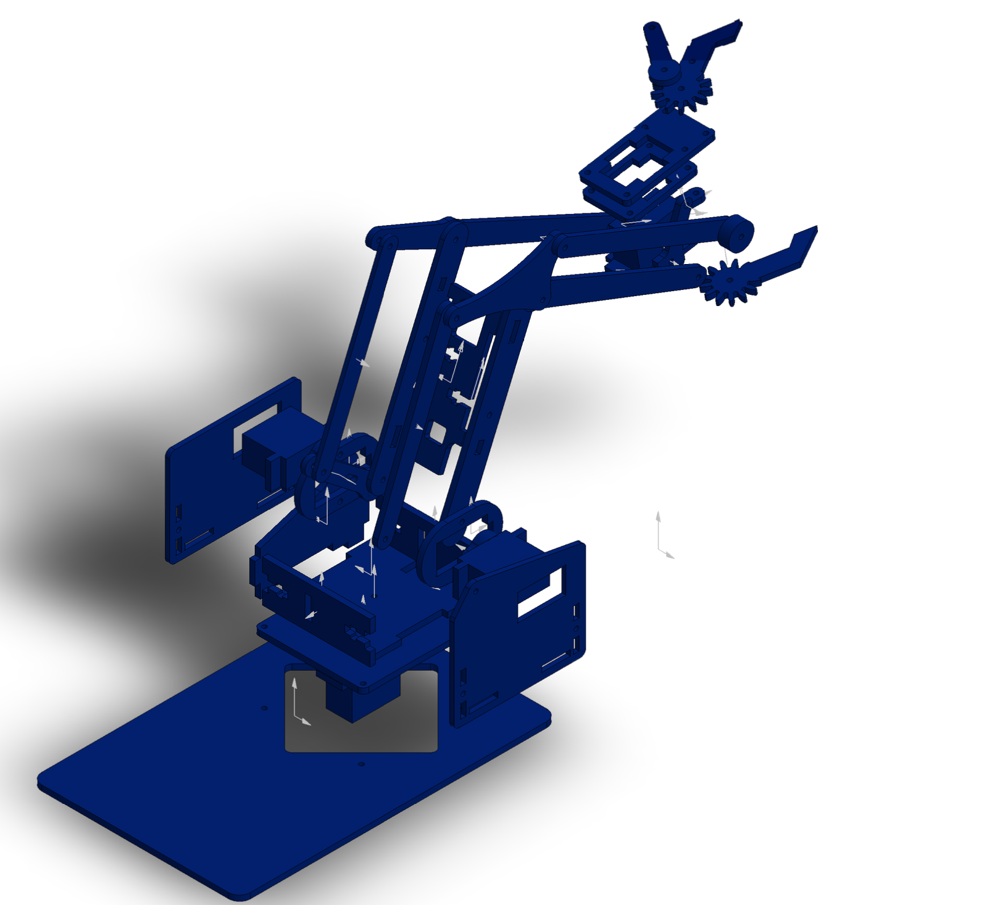

Research and Projects
ALAC : Constrained Model-Free Reinforcement Learning with Finite-Time Stability Guarantee
|  | Currently contributing to ALAC:
|
SpaceRobotEnv (Tsinghua-Space-Robot-Learning-Group)
|  | SpaceRobotEnv is an open-sourced environment for trajectory planning of free-floating space robots. Different from the traditional robot, the free-floating space robot is a dynamic coupling system because of the non-actuated base. Therefore, model-based trajectory planning methods encounter many difficulties in modeling and computing. Contributions include:
|
2D Localisation and SLAM
 |
My implementation of probabilistic robotics algorithms and assignments from introduction to mobile robotics
project includes algorithms for localization and SLAM like Particle Filter, Kalman Filter, EKF, and
a capstone implementation of graph SLAM in a 2d Pygame simulator.
|
Visual Slam and Visual Slam Python
 |
Implementation of several concepts in Visual Slam like Visual Odometry, optical flow, bundle adjustment, pose graph,
loop closure, Siding window, and dense reconstruction using Gauss-Newton or g2o for optimization.
Visual slam Python is meant to serve as a python repo to prototype Visual slam concepts using python wrappers for
g2o, pangolin etc.( Still OnGoing) |
Tomato harvesting Soft Robotic arm (Research Assistant)
Joined a team of 3 with a graduate student to design and implement a cost-effective soft robotic arm to be used for harvesting Tomatoes on a farm.
Using a vacuum pump, Cassava, and rubber as the components for the grabbing mechanism.
Trained YOLO algorithms to identify types of tomatoes as well as assess the state of fruit (Ripe/ Unripe)
Deploy project on a Raspberry PI with a camera attached and use Serial connection with an Arduino for control of the joints and gripper actuator
Simulated manipulator forward and inverse kinematic motions using python robotics toolbox.
LOUISE -A Medical CHATBOT
|  | A Medical Chatbot designed to suggest emergency diagnosis from symptoms communicated by users but unlike other chatbots, we show a technique that avoids large datasets of intents required to train similar bots. The Chatbot has a separate SVC model trained to categorize health problems based on symptoms and we have a separate Transformer model to detect Symptoms as intents and using several similarity algorithms, map the right symptoms. Splitting the backend like this avoids hours of writing a lot of intents to map symptoms in phrases to diagnosis |
CxrCovidClassify - Double Transfer learning for Covid Prediction on Mobile Devices
|  | We show the use of Double Transfer learning, The neural Net was first trained on a large dataset of X-rays on pneumonia so neural net learns the structure of Xray images and the finally trained on Covid Xray data set. Due to compatibility and optimisation, Mobile net was the pre-trained model to allow easy quantisation to deploy on a mobile device with tensor flow lite. |
Electronic Car Ignition using Face Recongnition
Development of a portable device to work with cars for car owners to start engines using face recognition, the application comes with a GUI and LCD and is developed to run optimally on a raspberry pi with motors attached to simulate car engine starting.
IOT Remote Farm monitoring
Development of an IoT solution for farmers to monitor some properties of their farms remotely using a collection of sensors suite with real-time connection to a web API that works with an IOS Mobile application and also includes and automatic sprinkler if soil humidity drops to a certain threshold.
Car Monitoring OBD2-Mobile
|  | A portable device working with an OBD device, the OBD is connected to cars providing real-time data and in some cases diagnosis to users remotely on their mobile devices. The OBD2 remotely connects to a Raspberry Pi that then publishes information to the user website or mobile device. |
Remote Repogrammable Robotic Arm (Final Year Project)
|  | Development of a remote solution to programming robot arms. A mobile application that remotely connects to the robotic arm and offers two modes one two directly actuate the arm and one to program and save a sequence of tasks so one robot can be adapted and switched to different task easily.
|
Robot Receptionist Concept Design ( Group Project )
Concept design for robot receptionist during the Covid 19 period to provide a tour for users visiting the mechanical Engineering building. We explore the CAD design of the robot, the use of active Rfid for localization, use pre-recorded audio for conversation with humans and a language model for intent detection.